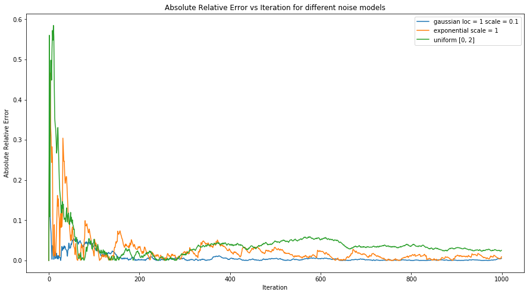

[Project] Signal Denoising using 1D Kalman Filters
Introduction
The Kalman filter is an optimal estimator that infers parameters uncertain and inaccurate measurements. The recursion implementation implies that new measurements can be processed as they arrive. The Kalman Filter uses this concept of perturbation to "update states" without recursively solving a larger and larger least squares problem. This is advantageous because solving increasingly larger least squares problems is incredibly time consuming. This section pertains to the concepts and derivation of the Kalman Filter. Firstly, perturbing inverse of a matrix is explored through the work of Hager (1989). Next, the update concept to derive the Kalman Filter formulae. This is a modified version of the derivation presented by Lacey (1998). Ultimately, the filter reduces to updating 5 equations.
Solving Overdetermined Systems: Normal Equation
An overdetermined system $Ax = b$ can be solved by minimizing $| b - Ax |_2^2$ where $A \in {\rm I!R}^{m \times n}$, $m > n$, $x \in {\rm I!R}^{n \times 1}$ and $b \in {\rm I!R}^{m \times 1}$ The overdetermined system is equivalent to solving the square system This is called the normal equation and the solution is
Perturbing any Invertible Matrix A
The inverse of an invertible matrix A perturbed by a rank k matrix $UV^T$ is given by the Sherman-Morrison-Woodbury formula
Updating Least Squares
Suppose we receive new data that has the relation $vx = c$. THe new "A" matrix is given by Let $B = A^T A$. The updated B can be given the the equation Let $u = v^T$. From the Sherman-Morrison-Woodbury formula, we can attain where This implies that the new B can be found by adding a rank 1 correction to the first matrix. This form can be used to produce the new least squares solution with the new B where Similarly, if the new data has the relation $Vx = C$, then the new x can be expressed by where $B_{k+1}^{-1}$ can be expressed as
Kalman Filter
The Kalman Filter uses the updated least squares solution form $x_1 = x_0 + k(c-vx_0)$ to attain a new estimate when new data arrives. This implies that a new linear system does not need to be fully solved.
State Vectors, Measurement Vectors and Covariances
Suppose the true values are represented by the equation where $x\in {\rm I!R}^{m\times 1}$ is called the state vector at time k, $\Phi \in {\rm I!R}^{m\times n}$ is the transition matrix from time k to time k+1 (assumed to be time invariant) and $v_k \in {\rm I!R}^{m\times 1}$ is the associated white noise process. The observations can be represented by the equation where $z_k\in {\rm I!R}^{m\times 1}$ is the actual measurement vector at time k, $H \in {\rm I!R}^{m\times n}$ is the noiseless connection between state and measurement vector (assumed to be time invariant) and $v_k \in {\rm I!R}^{m\times 1}$ is the associated measurement vector (white noise process). The covariances of the noise models mentioned above can be represented by where Q is the state covariance and R is the measurement covariance. Similarly, the covariance of the error (mean squared error) can be represented by where
Update Equation for New Estimate
The update equation from the new estimate can be put in the form $x’_k$ is the prior estimate of $x_k$. $z_k - H\hat x’_k$ is called the innovation $i_k$. This is equivalent to the updated least squares solution In this case, C is z and V is H.
Relating $P_k$ and $P_{k-1}$
In order to relate $P_{k+1}$ and $P_k$, substitute into to attain
Therefore, the estimation error is
And the covariance of the previous estimation error is
$E[(x_k - \hat x’_k)(x_k - \hat x’_k)^T]$ can be replaced by $P’_k$, which is the error covariance for the previous estimate. $E[v_kv_k^T]$ can be replaced by R (from the above definition)
Therefore,
An expansion of $P_k$ gives the form
The covariance matrix form of $P_k$ can be represented in the form
Noting that $tr(K_k H P’_k) = tr(P’_k H^T K_k^T)$ because $tr(A) = tr(A^T)$, the trace of the expansion is
From this, we can see that
Minimizing the trace of $P_k$ minimizes the mean squared error
Kalman Gain
To get the gain that minimizes the mean squared error, we must take $\frac{dtr(P_k)}{dK_k}$ The innovation $i_k$ covariance is given by
Solving for $P_k$
Using the Kalman Gain equation, we can substitute it into the expanded $P_k$
Estimated State Projection and Error Covariance
The state projection is done using The error covariance for the next time interval is given by Finally,
Algorithm
The update equations are as follows
,
,
,
,
,
The Kalman Filter Algorithm can be boiled down to a few lines of code
import numpy as np
import matplotlib.pyplot as plt
from math import pi
def kf_1d(x, z, xhat, xhat_prev, P, P_prev, K, Q, R, phi, **kwargs):
xhat[0] = kwargs.get('xhat0', 1.0)
P[0] = kwargs.get('p0', 1.0)
arr_size = len(x)
for k in range(1, arr_size):
xhat_prev[k] = phi*xhat[k-1]
P_prev[k] = phi*P[k-1]*np.transpose(phi) + Q
K[k] = P_prev[k]*H/(H*P_prev[k]*np.transpose(H) + R)
xhat[k] = xhat_prev[k] + K[k]*(z[k] - xhat_prev[k])
P[k] = (1 - K[k]*H)*P_prev[k]
return xhat
def get_error(x, xhat):
return abs(xhat - x)/x
# set truth values
x = np.array([1.0]*1000)
arr_size = len(x)
z = np.random.normal(x, 0.1, arr_size)
# initialize arrays
xhat = np.zeros(arr_size)
xhat_prev = np.zeros(arr_size)
P = np.zeros(arr_size)
P_prev = np.zeros(arr_size)
K = np.zeros(arr_size)
General Operation
Q = np.array([1e-10])
R = np.array([1e-4])
H = np.array([1.0])
phi = np.array([1.0])
xhat = kf_1d(x, z, xhat, xhat_prev, P, P_prev, K, Q, R, phi)
Methods
A standard signal with value 1.0 and length 1000 were used to investigate the Kalman Filter. After Gaussian noise was applied to the signal, each signal is passed into the filter iteratively and an estimate is computed for each point. The Gaussian noise is applied with mean of 1 and standard deviation of 0.1
Kalman Filter Denoising
A 1D signal and a 2D signal (image) is used to demonstrate the Kalman Filter. The Q, R and H were arbitrarily chosen to be Q = 1e-10, R = 1e-4 and H = 1.0. The image used was the AT3_1m4_01.tif from the MATLAB built in images and is shown below
Each image for each iteration is given a new gaussian noise distribution. The noise ratio is computer by adding a fraction (called noise ratio, 1e0) of the maximum value of the image multiplied by a gaussian distribution to the image. This is exemplified in the code shown in the appendix.
Convergence
Different values for the initial guess (xhat[0] from 0 to 2), process variances Q (1e-10, 1e-6, 1e-2) and measurement variances R (1e-10, 1e-6, 1e-2) were used to investigate the effect on mean squared error convergence.
The Kalman Filter is incredibly useful for denoising signals, whether the error is gaussian distributed, exponentially distributed or uniformly distributed. These three noise models are used to investigate convergence of the filter.
Numerical Results
Kalman Filter Denoising
The true signals, measured signals and estimated signals are shown below
From this plot, the Kalman Filter presents a good result for denoising unchanging signals with Gaussian noise.
Convergence
In order to quantify the convergence, the absolute relative error was computed. For the 1D signal, the absolute relative errors are shown below
From the plot above, the relative error is seen to converge to around 0.005 at 1000 iterations. The plot of absolute relative error for different values of Q is shown below
This plot shows that for different values of initial guess, xhat[0], the absolute relative error is the same after 1 iteration. This suggests that initial guesses can be arbitrary.
The plot of absolute relative error for different values of Q is shown below
This plot shows that the estimated process variance values matter. The lower the estimated process variance, the better the estimated signal.
The plot for different Measurement Variances R is shown below
This plot shows that the estimated measured variance values matter. The smaller the estimated process variance, the worse the estimated signal.
The same concept was applied to images. The results for AT3_1m4_01.tif is shown below for different iterations.
Qualitatively, it is seen that as more Kalman Filters are applied, the image more denoised.
The plot of different noise models and the observed convergence for absolute relative error is shown below

From the plot, it is seen that the gaussian distribution shows better convergence then exponential and uniform distributions. This implies that the noise distribution matters when detecting signals.
Conclusion
From the numerical experiments above, the Kalman Filter serves as a good denoising filter for 1D signals. The estimated process variance and the estimated measurement variance affects the convergence but the initial guess of the signal does not. The lower the estimated process variance, the better the denoising. The higher the estimated measurement variance, the better the denoising. The initial guesses display the same convergence behavior after the 1st iteration. Furthermore, gaussian noise is suppressed better than exponential and uniform noise distributions.
Discussion
The 1D Kalman Filters can be extended to 2D and higher dimensions to estimate changing signals. For example, GPS software use the Kalman Filter to estimate position of a car it is in a tunnel with no GPS signals. Similarly, accelerometers use Kalman Filters to estimate velocity and position of an object.
Rejecting outlier measurements is important so that the denoised signal is not corrupted. This can be done using validation gates.
There are numerical problems with the Kalman Filter that were not discussed here. Asymmetric covariance matrices present numerical rounding issues.
Acknowledgements
I would like to thank Professor Bai for providing me with the fundamental concepts to undertake this project.
References
[1] “Part III: Low Rank and Compressed Sensing.” Linear Algebra and Learning from Data, by Gilbert Strang, Wellesley-Cambridge Press, 2019, pp. 159–200.
[2] Lacey, Tony. “Chapter 11 Tutorial: The Kalman Filter.” Algorithms Guide, web.mit.edu/kirtley/kirtley/binlustuff/literature/control/Kalman%20filter.pdf.
[3] Hager, William W. “Updating the Inverse of a Matrix.” SIAM Review, vol. 31, no. 2, 1989, pp. 221–239., doi:10.1137/1031049.